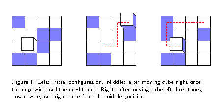
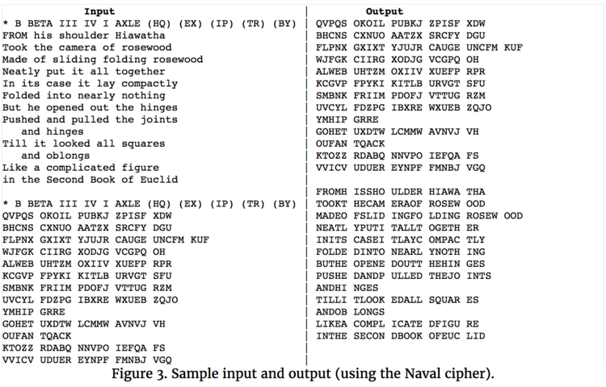
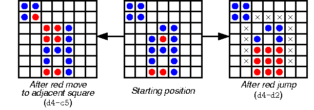
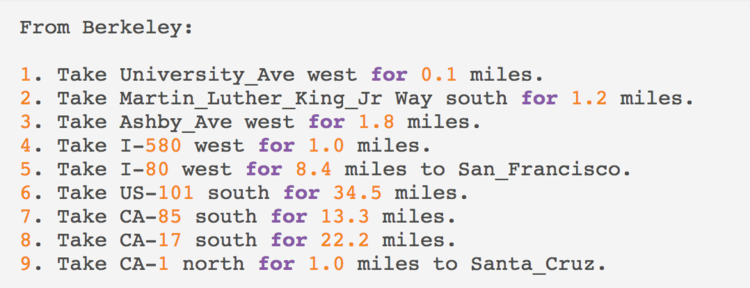
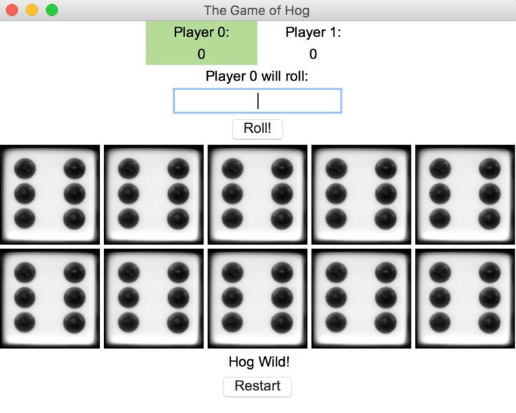
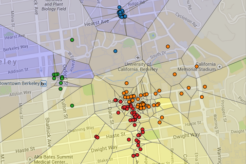
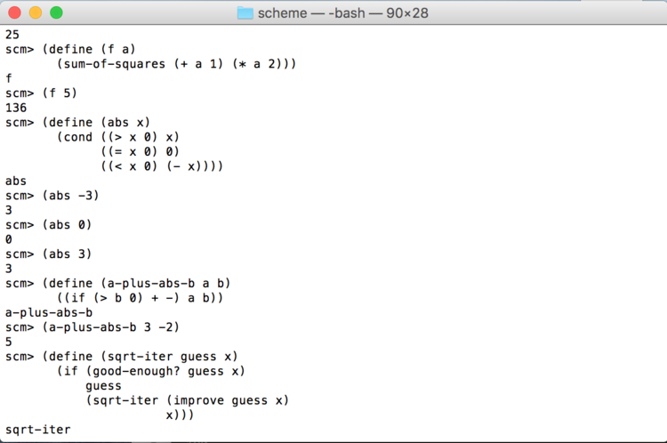

projects
(I can not make them public on github for school of conduct purposes)
CS 61B: DATA STRUCTURES
cube puzzle game
click here for the project spec
enigma
First large scale project of CS61B, replicated the WWII German encryption machine Enigma by building generalized simulator that could handle numerous different descriptions of possible initial configurations of the machine and messages to encode or decode. Worked mostly with Java's String, HashMap, ArrayList, and Scanner data structures to handle string manipulation, data mapping required, and file reading for encryption.
click here for the project spec
ataxx
Created a replica of the game Ataxx in Java in CS61B. The objective of the game is to fill the board with your color and moving to a square adjacent to an opponent's square changes their color to yours. Built both the GUI version and the command line version of the game implementing both manual players and AI players. For AI player, used game trees and alpha beta pruning based on heuristic values.
click here for the project spec
graph api
I created a graph package API that includes traversals, breadth first search, and depth first search in Java. A replica of a Makefile and a Trip application were clients created with this API. The Trip application finds the shortest path between two locations using A* search.
click here for the project spec
CS 61A: The Structure and Interpretation of Computer Programs
HOG
click here for the project spec
MAPS
Created a Voronoi diagram in Python to make a visualization of restaurant ratings using machine learning and the Yelp academic dataset. Model segmented Berkeley into regions that were shaded by the predicted rating of the closest restaurant (yellow is 5 stars, blue is 1 star).
click here for the project
ants vs. some bees

Created a tower defense game inspired by Plants vs. Zombies using a combination of functional programming and object-oriented programming.
click here for the project spec
Scheme
Used Python to code an interpreter for Scheme language for CS61A. Learned both about functional programming through Scheme coding assignment and Read-Eval-Print-Loop through coding each step of the process for interpretation.
click here for the project spec